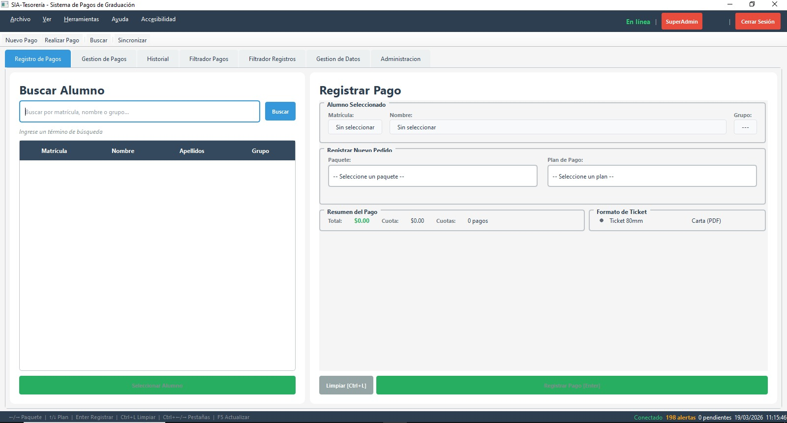
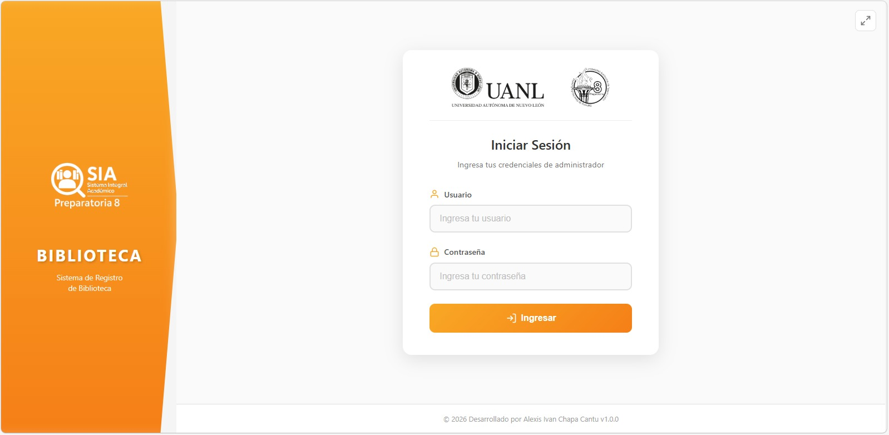
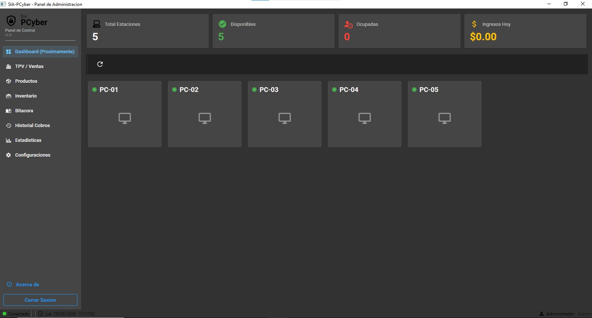

Proyectos Destacados

Calculadora de Matrices GUI
Aplicacion interactiva de Python para operaciones de matrices con interfaz intuitiva de Tkinter. Soporta matrices de 1x1 a 5x5 con capacidades de suma y resta.

Sistema de Cobros - App de Escritorio
Mi primera aplicacion de escritorio con un sistema de cobros desarrollado en Python. Utiliza conexion local HTTP para comunicacion y permite guardar y manejar datos locales de forma eficiente.

Sistema de Biblioteca
Mini sistema web para manejar registros de entrada y salida de una biblioteca. Utiliza React en el frontend, Node.js en el backend y PostgreSQL como base de datos, conectada mediante red local.

CyberManager - App de Escritorio
Aplicacion de escritorio para la gestion integral de un CyberCafe. Maneja inventario, ganancias, monitoreo de equipos y cuentas de impresiones. Desarrollada con tecnologias modernas de .NET.

Historial Academica - Sistema Web
Mi proyecto mas grande. Un sistema web integral para la gestion de historiales academicos con multiples modulos y funcionalidades avanzadas.